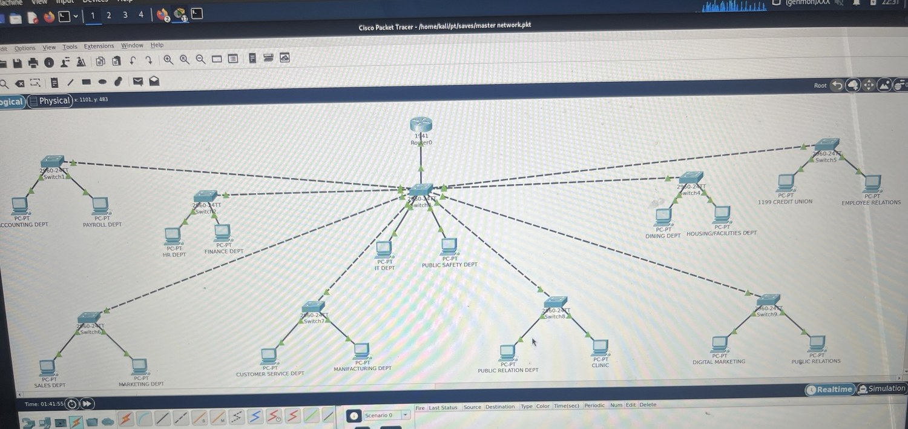
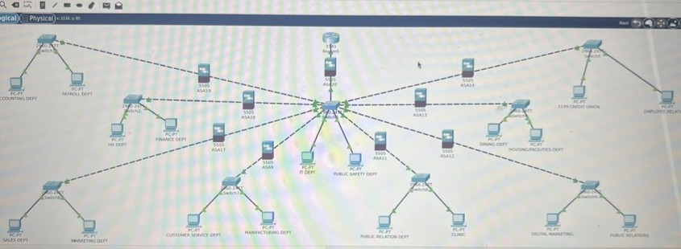
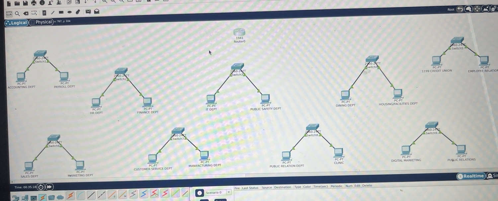
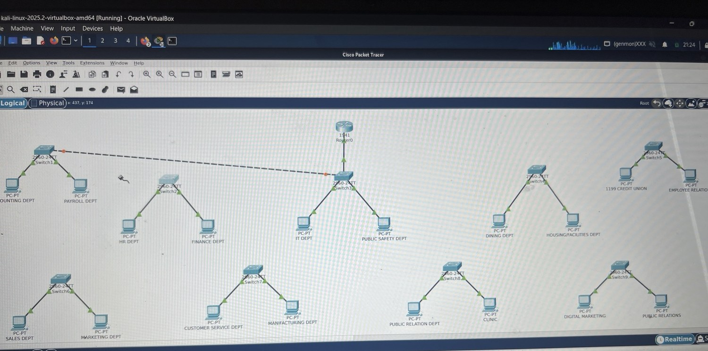
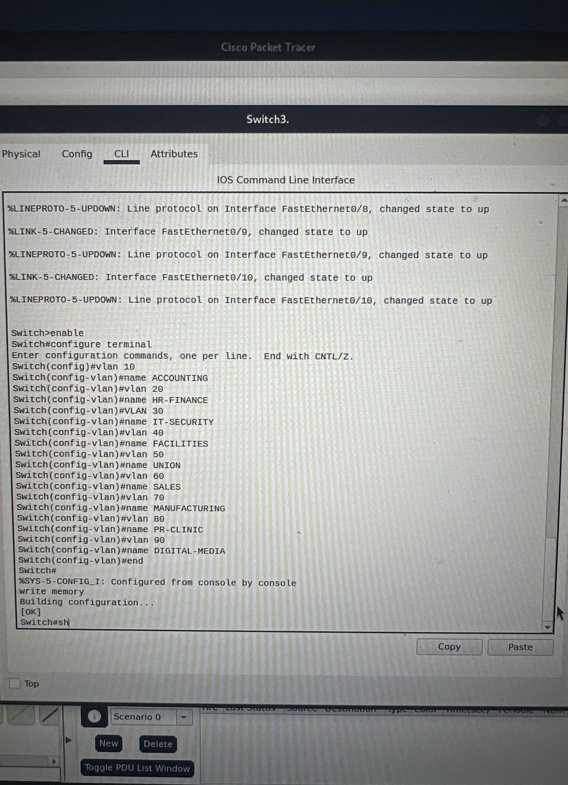
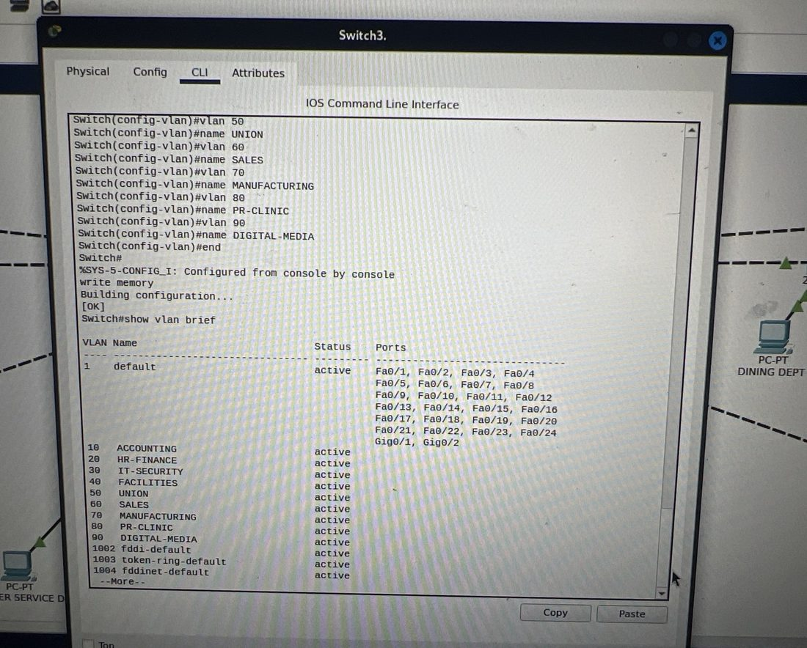
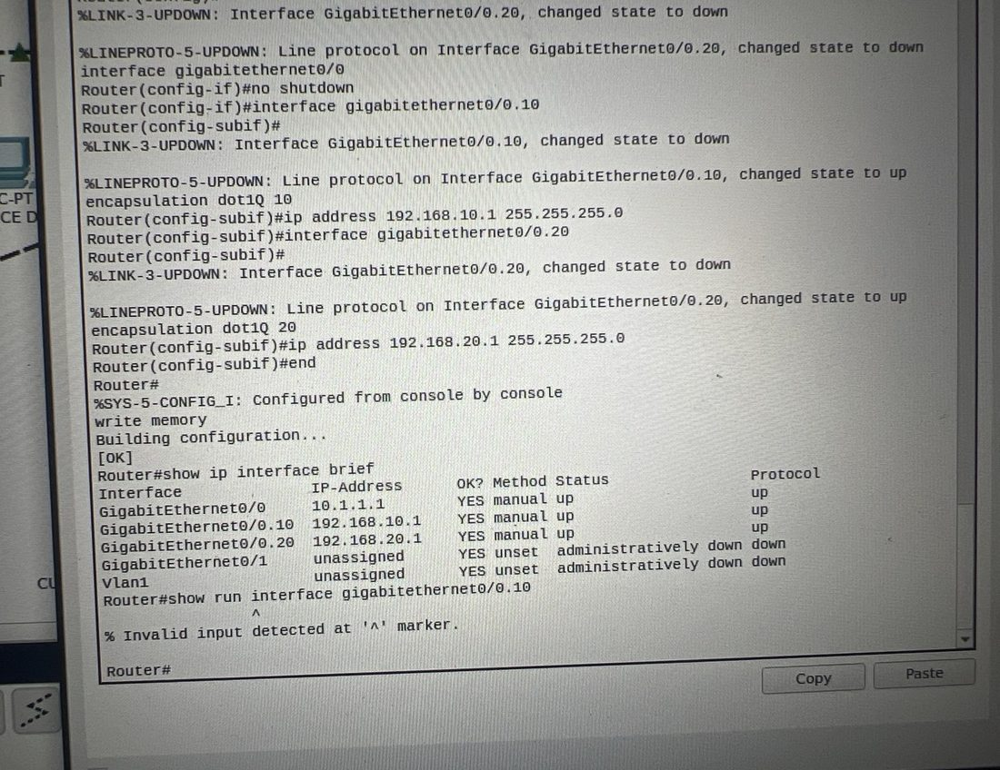
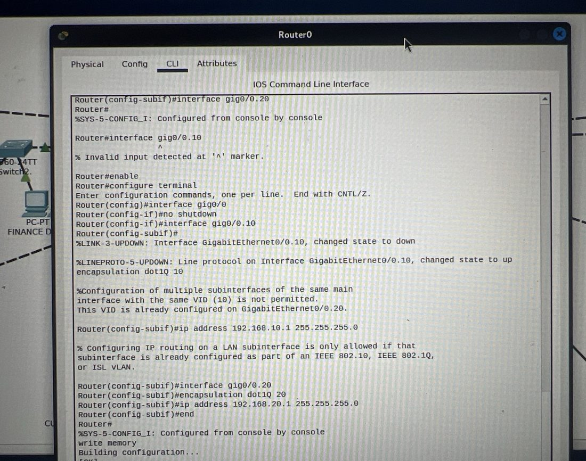
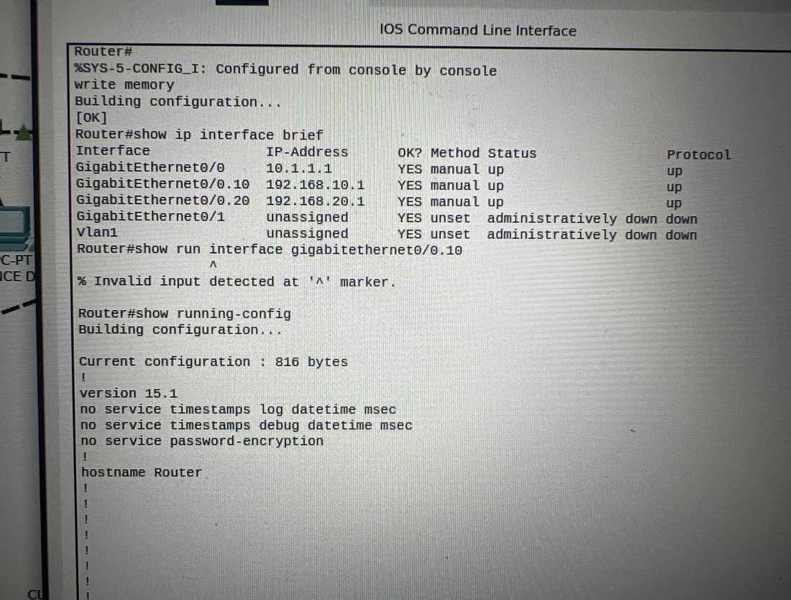
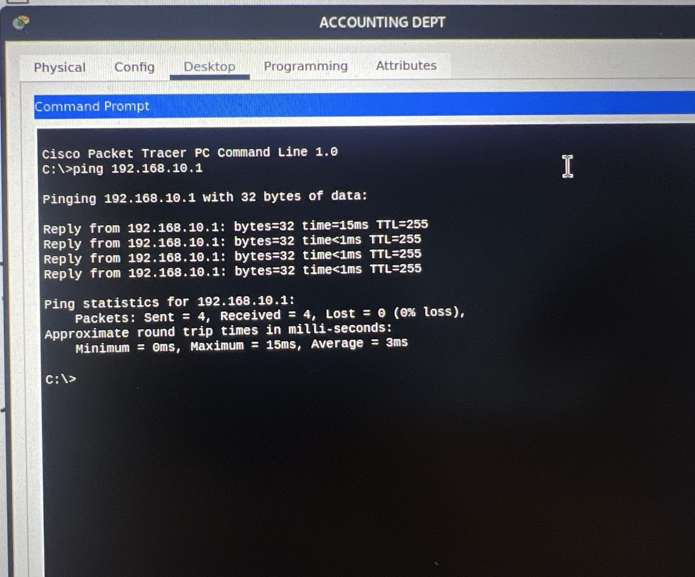

The Problem
A flat 18-department network in one broadcast domain — no segmentation, no scalability, no protection against lateral movement between departments.
Cisco Packet Tracer · Cisco IOS 15.1 · Kali Linux 2025.2
I designed and built a hierarchical 18-department campus network in Cisco Packet Tracer — 9 VLANs, 802.1Q trunks, Router-on-a-Stick inter-VLAN routing, and a perimeter of nine Cisco ASA5505 firewalls. End-to-end inter-VLAN connectivity was verified with 0% packet loss.
For Recruiters — 60-Second Read
A flat 18-department network in one broadcast domain — no segmentation, no scalability, no protection against lateral movement between departments.
A three-tier hierarchical Cisco network: 1 router, 1 core/distribution switch, 9 access switches, 9 VLANs, and 9 ASA5505 firewalls — modeled on real enterprise designs.
Cisco IOS CLI evidence: show vlan brief, show ip interface brief, write memory, and a 4/4 ping at 0% packet loss between two VLANs.
This is the same architecture pattern used in production campus networks: segmentation by department, trunking for efficiency, RoaS for routing, and firewalls for east-west containment.
Engineer of Record
Every Cisco ASA5505 firewall in this topology — perimeter, departmental, and the command-and-control segment guarding the private data zone — was built, deployed, and verified by Romando Wright. Configuration scope below is limited to what the captured evidence demonstrates; nothing is overstated.

master network.pkt — final saved topology, every link green.Tools & Platforms
Network Design
The lab started as a flat topology that broke under scale: trunk conflicts, routing conflicts, no broadcast control. I rebuilt it on the standard Cisco enterprise model — a single router at the top, one core/distribution switch aggregating trunks, and an access layer of nine switches fanning out to department PCs.
Router0 (Gig0/0 — Router-on-a-Stick)
│
[ Switch3 — Core / Distribution ]
│
┌──────┬──────┬──────┬──┴──┬──────┬──────┬──────┐
SW1 SW2 SW4 SW5 SW6 SW7 SW8 SW9
│ │ │ │ │ │ │ │
PCs PCs PCs PCs PCs PCs PCs PCs
── ASA5505 perimeter & departmental ──
| Layer | Role | Device(s) |
|---|---|---|
| Routing | Inter-VLAN routing via 802.1Q subinterfaces | Router0 (Cisco 1941) |
| Core / Distribution | VLAN aggregation, trunk uplinks, CDP visibility | Switch3 (Catalyst 2960-24TT) |
| Access | Per-department ports, VLAN assignment | SW1, SW2, SW4–SW9 |
| Security Perimeter | Inter-zone policy & stateful inspection | 9 × ASA5505 |
VLAN Segmentation Plan
Without VLANs, all 18 departments share a single broadcast domain. With VLANs, a compromised Accounting workstation cannot reach HR or Finance at Layer 2. Each VLAN gets its own /24 subnet and Router-on-a-Stick subinterface gateway.
| VLAN | Name | Departments | Subnet | Gateway |
|---|---|---|---|---|
| 10 | ACCOUNTING | Accounting / Payroll | 192.168.10.0/24 | 192.168.10.1 |
| 20 | HR-FINANCE | HR / Finance | 192.168.20.0/24 | 192.168.20.1 |
| 30 | IT-SECURITY | IT / Public Safety | 192.168.30.0/24 | 192.168.30.1 |
| 40 | FACILITIES | Dining / Facilities | 192.168.40.0/24 | 192.168.40.1 |
| 50 | UNION | Union / Employee Relations | 192.168.50.0/24 | 192.168.50.1 |
| 60 | SALES | Sales / Marketing | 192.168.60.0/24 | 192.168.60.1 |
| 70 | MANUFACTURING | Customer Service / Manufacturing | 192.168.70.0/24 | 192.168.70.1 |
| 80 | PR-CLINIC | PR / Clinic | 192.168.80.0/24 | 192.168.80.1 |
| 90 | DIGITAL-MEDIA | Digital Media / Public Relations | 192.168.90.0/24 | 192.168.90.1 |
Router-on-a-Stick
Router0's GigabitEthernet0/0 trunks to the core switch. Each VLAN gets a logical subinterface (Gig0/0.10, Gig0/0.20, …) with its own 802.1Q tag and IP address. That subinterface IP is the default gateway for every PC in that VLAN.
Order matters — encapsulation must come before the IP address, or IOS rejects the command.
Router# configure terminal
Router(config)# interface gig0/0
Router(config-if)# no shutdown
!
Router(config-if)# interface gig0/0.10
Router(config-subif)# encapsulation dot1Q 10
Router(config-subif)# ip address 192.168.10.1 255.255.255.0
!
Router(config-subif)# interface gig0/0.20
Router(config-subif)# encapsulation dot1Q 20
Router(config-subif)# ip address 192.168.20.1 255.255.255.0
Router(config-subif)# end
Router# write memoryThe switch port facing the router carries every VLAN tagged. Without a trunk you'd need a separate cable per VLAN.
Switch# configure terminal
Switch(config)# interface range fa0/1 - 8
Switch(config-if-range)# switchport mode trunk
Switch(config-if-range)# switchport trunk encapsulation dot1q
Switch(config-if-range)# endSecurity Perimeter
The security overlay places an ASA5505 in front of each department zone and an additional firewall guarding the command-and-control private data segment. Inter-zone policy enforced at each appliance — a breach in one department cannot pivot across the campus.

Evidence — Configuration & Validation
The screenshots below are captured directly from the Cisco IOS CLI and Cisco Packet Tracer canvas during the build. Click any image to open the original source photo.


master network.pkt saved. Title bar confirms the final completed file. All inter-VLAN paths up and routed.

vlan 10 / name ACCOUNTING, vlan 20 / name HR-FINANCE, … through vlan 90 / name DIGITAL-MEDIA, followed by write memory.

show vlan brief — all nine VLANs ACTIVE. Switch3 confirms VLAN 10 ACCOUNTING, 20 HR-FINANCE, 30 IT-SECURITY, 40 FACILITIES, 50 UNION, 60 SALES, 70 MANUFACTURING, 80 PR-CLINIC, 90 DIGITAL-MEDIA — all in the VLAN database, all active.

encapsulation dot1Q 10 → ip address 192.168.10.1; same pattern for VLAN 20 at 192.168.20.1. Subinterface line protocols come up after encapsulation negotiates.

encapsulation dot1Q first, then the IP. write memory persisted the corrected config.

show ip interface brief — gateways up/up. GigabitEthernet0/0.10 = 192.168.10.1 up/up, GigabitEthernet0/0.20 = 192.168.20.1 up/up. The parent Gig0/0 trunk is up. Router-on-a-Stick is live.

192.168.10.1: Sent = 4, Received = 4, Lost = 0 (0% loss). Inter-VLAN routing confirmed.
Skills Demonstrated
| Skill | What the evidence proves |
|---|---|
| VLAN creation & naming | 9 VLANs created on Switch3 via IOS CLI, persisted with write memory |
| 802.1Q trunk configuration | Multi-VLAN transport between access switches and the core |
| Router-on-a-Stick subinterfaces | Inter-VLAN routing without an L3 switch; gateways verified up/up |
| Cisco IOS CLI fluency | Direct config, verification, and troubleshooting from the command line |
| Hierarchical campus design | Routing / Core / Access tiers — the standard Cisco enterprise model |
| ASA5505 firewall deployment | 9 firewalls placed across access zones and the private data segment |
| Live troubleshooting | Diagnosed and fixed an encapsulation/VID order error mid-build |
| End-to-end validation | Verified inter-VLAN routing with a 4/4 ping at 0% packet loss |
Recruiter takeaway
This lab maps directly to entry-level network and security engineering work: design a segmented network, implement it on Cisco gear, troubleshoot it from the CLI, document what you built, and prove it works. Every claim on this page is backed by a screenshot in the Evidence section — no slideware.